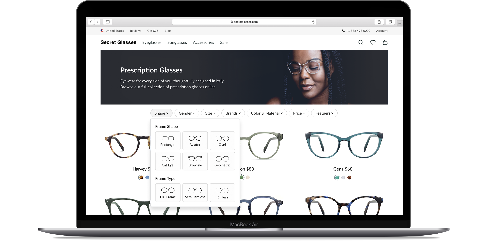
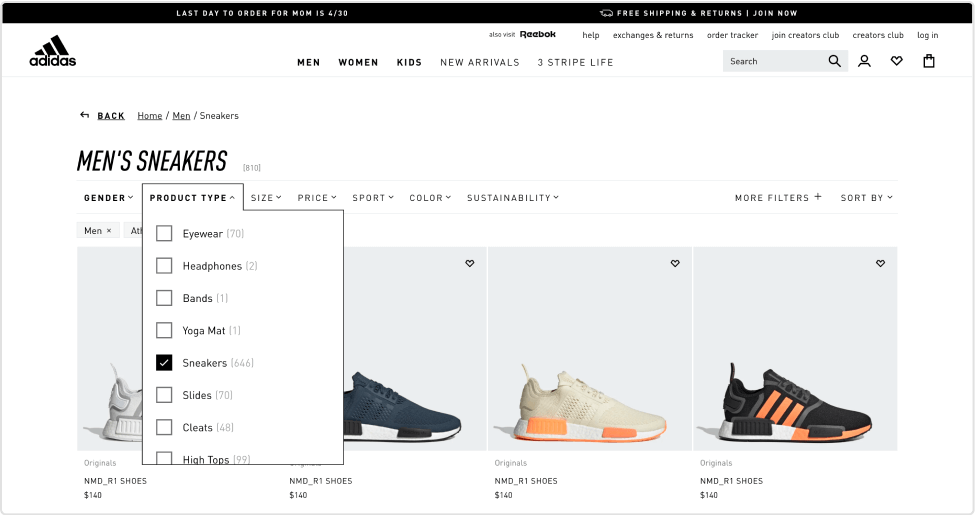
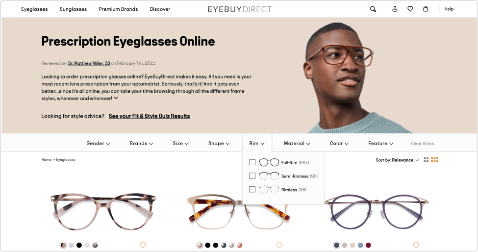
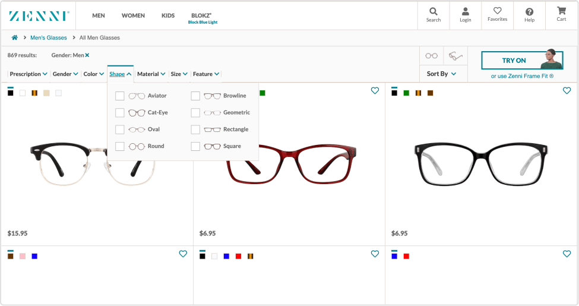
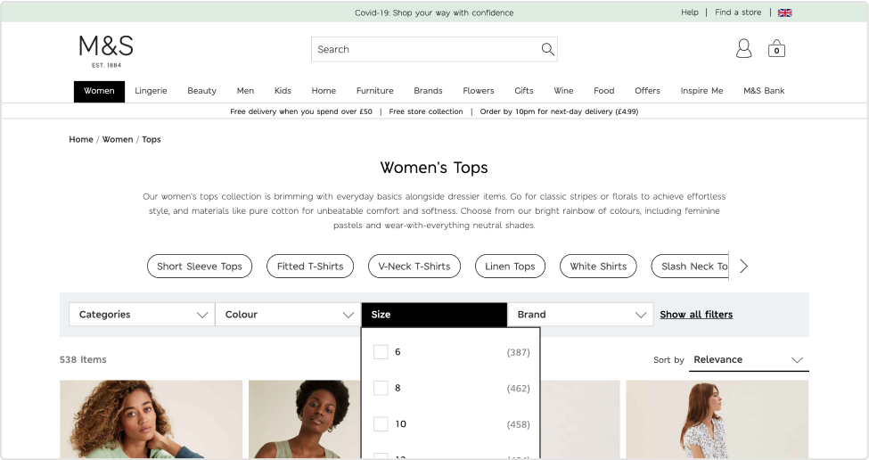
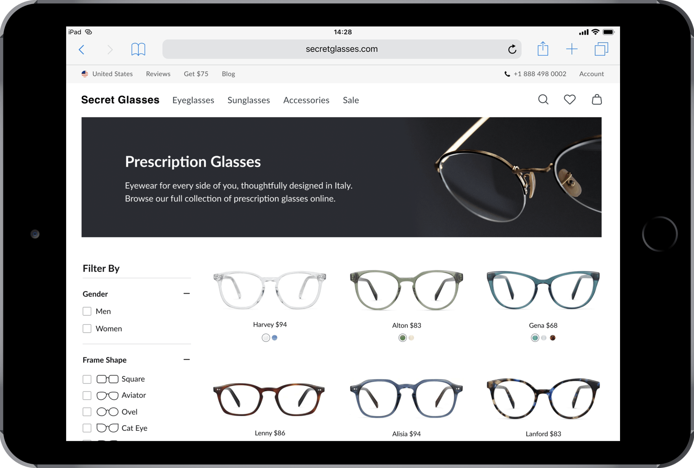

Evyatar Mor
Contact

Page layouts can change a lot for any given product. While working as a designer at the biggest online eyewear
retailer in the world, I had a vision - to change one of the most sensitive pages on the site. This project is
my “baby”, I pitched the idea, did all of the research for it, and designed it.
Note: I can’t share the real design due to confidentiality reasons, all the information here is based on the real project but re-created.
Note: I can’t share the real design due to confidentiality reasons, all the information here is based on the real project but re-created.
In the last few years, huge brands changed their Categories layout. For example, the filters at the side moved
to the top - this allows the site to either make the items bigger, or show more items per row.
The Categories Page is one of the most sensitive pages on an e-com site - even a single change, to a single element, can be worth millions. The purpose of this project is to test the new layout with an A/B test and raise the KPIs.
The Categories Page is one of the most sensitive pages on an e-com site - even a single change, to a single element, can be worth millions. The purpose of this project is to test the new layout with an A/B test and raise the KPIs.
The old design had 12 filters and 3 more actions alongside them - these are too many options, and they won’t fit
in a horizontal design.
By looking at the data, we can see that we have another problem with the old design - the users do not use the filters at the bottom of the page, even though some of them, such as “price”, would theoretically have a lot of value to the user. The new design will fix this.
By looking at the data, we can see that we have another problem with the old design - the users do not use the filters at the bottom of the page, even though some of them, such as “price”, would theoretically have a lot of value to the user. The new design will fix this.
According to Miller’s Law, the average person can only keep around 7 items in their short-term memory.
Therefore, we can divide content into smaller chunks in order to help users process, understand, and memorize
information easily.
Keeping that in mind and through deep analysis, I tried grouping them under a common “parent” filter. It worked. I made sure that there will be no more than 7 “parent” filters in the new design.״
Keeping that in mind and through deep analysis, I tried grouping them under a common “parent” filter. It worked. I made sure that there will be no more than 7 “parent” filters in the new design.״
As I mentioned before, this isn’t the real design - I re-created it specifically for this showcase. However,
this design still conveys the same ideas and principles as the original design.
New filter information hierarchy (Old filters are now subfilters)

The magic mumber 7
New Design
Opportunity for a big win.
Pros & Cons

Old category layout
Old category filters data sort by usage

Eyebuydirect
Zenni
M&S
Adidas






Old layout (Tablet)
New layout (Tablet)